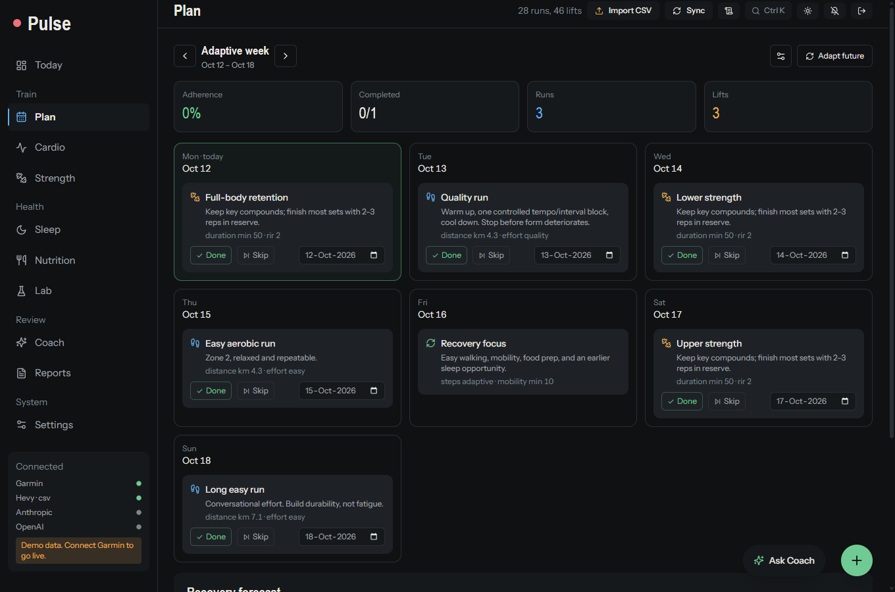
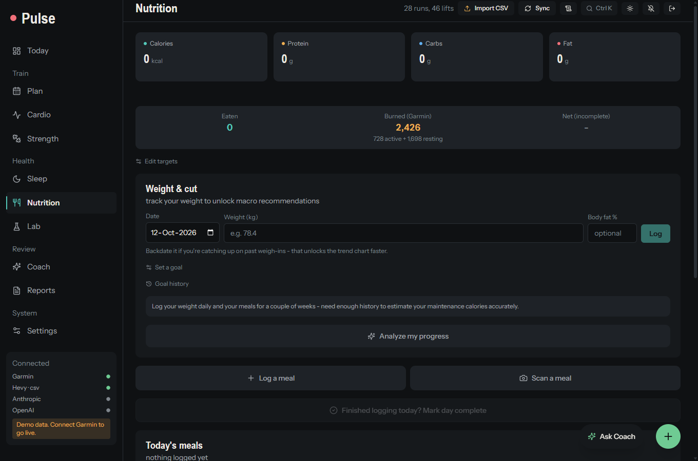
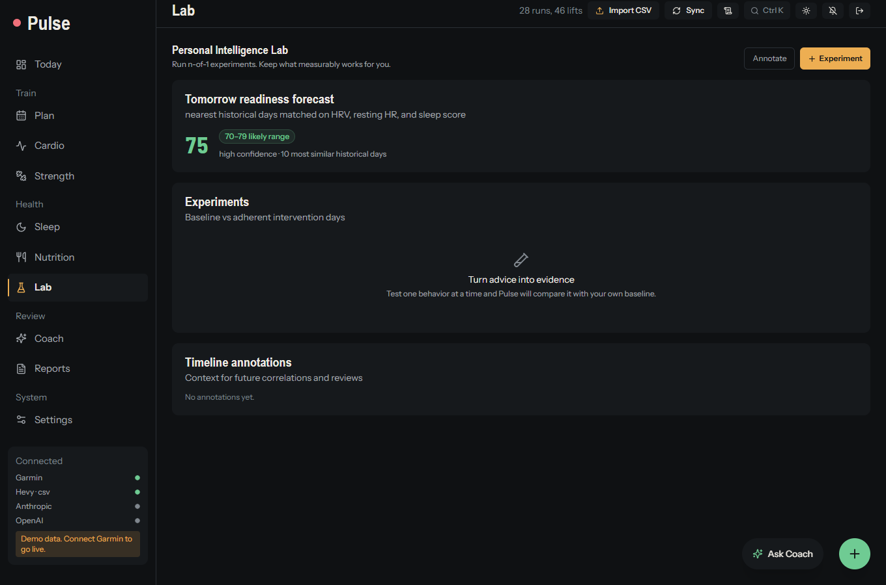
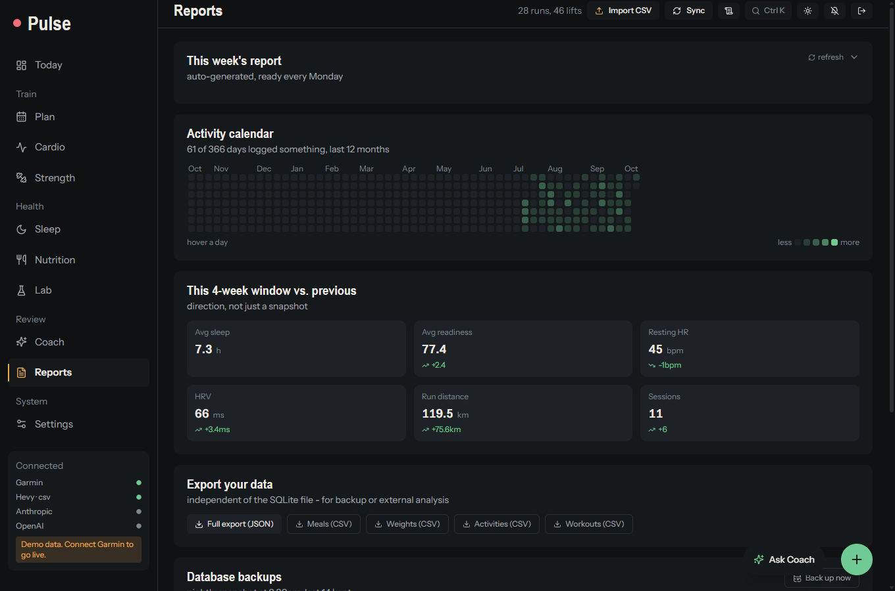
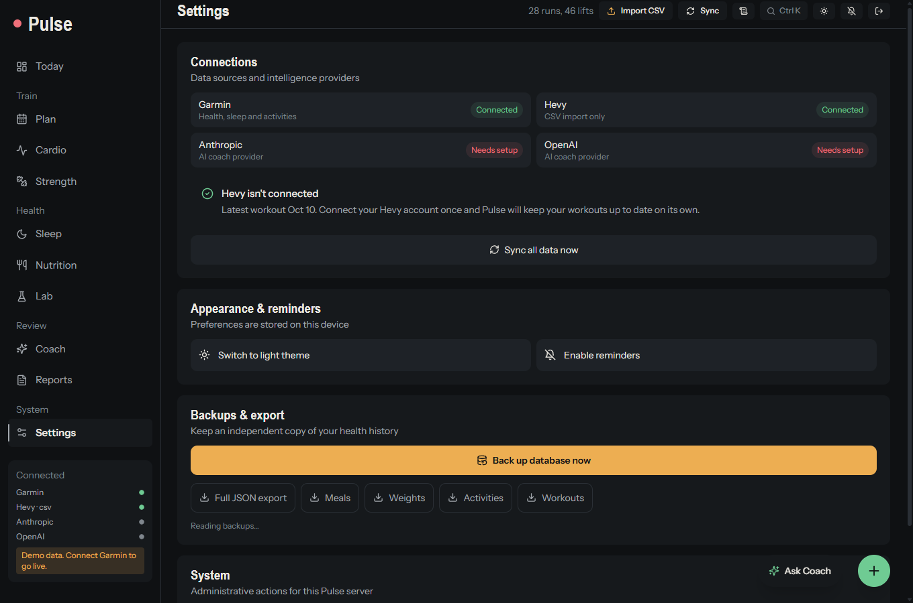

Features
Every screen below is the built-in demo: invented data, nothing real.
Today
Recovery, day strain and sleep performance up top, a 30-day chart, and a plan for the day built from your readiness, training and sleep. Morning and evening check-ins feed the plan.

Plan
An adaptive weekly plan with targets and completion controls.

Cardio
Today's call (quality session, easy day or rest), race-time estimates with honest ranges, training stress balance, run insights, splits and route maps. Set a race goal and get a readiness report.

Strength
Hevy workouts with volume per muscle, a body map, per-exercise progression and workout detail. Import the free CSV export or sync automatically.

Sleep
Nightly stages, sleep debt against your own target, and how sleep fed your recovery score.

Nutrition
Quick meal logging, daily macro targets, a calorie trend, recipes and a weight cut tracker.

Lab
Look for patterns across your own history.

Reports
One, four or twelve week reports with an AI narrative. Print to PDF.

Coach
Ask the Coach about your training. It works from a compact summary of your recent data, can pull a race-readiness report, and can log injuries or a race goal when you ask. It needs your own Anthropic or OpenAI key; everything else in Pulse works without one.
Settings and backups
See what is connected, force a sync, switch theme, enable reminders, and back up or export your data as JSON or CSV.
